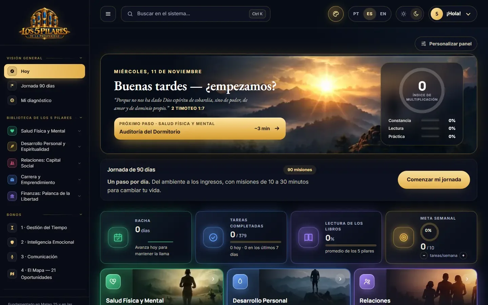
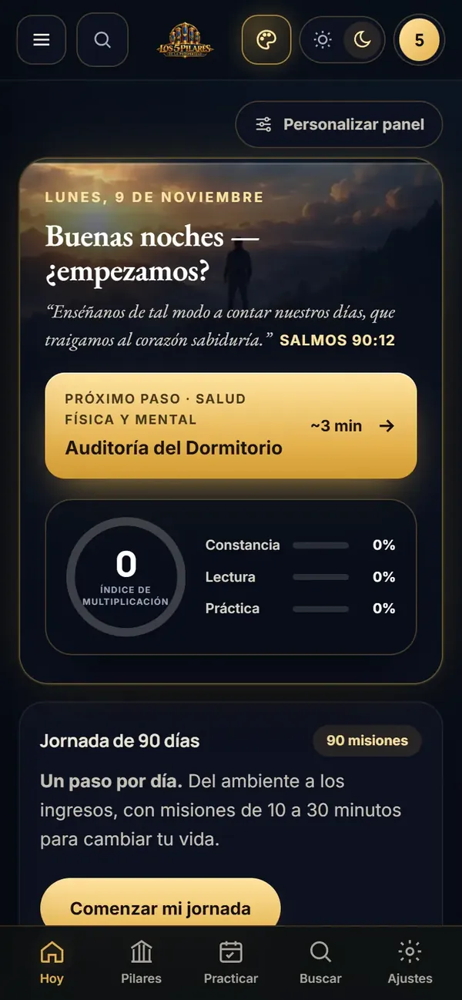
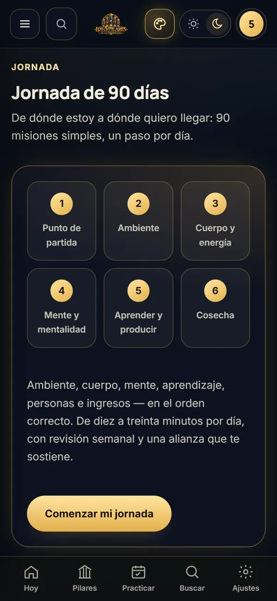
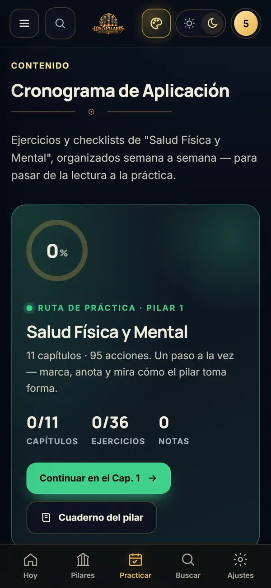
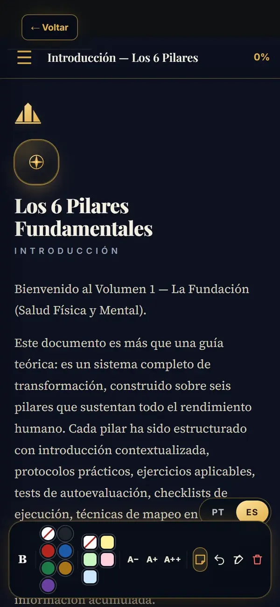
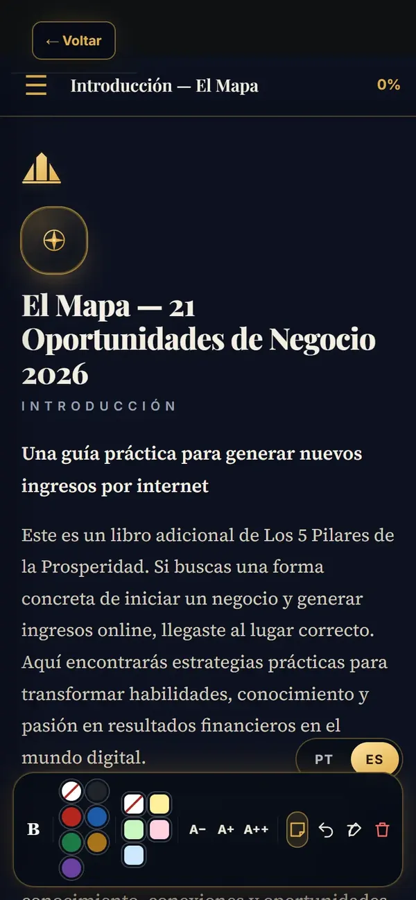

Salud física y mental
Lo que cambia: energía para tu día, en vez de un cuerpo que cobra la factura.
- Calidad del sueño y recuperación
- Nutrición y hábitos alimentarios
- Movimiento, fuerza y movilidad
- Estrés, agotamiento y equilibrio
Para quienes cuidan de todo, menos de su propia vida
Descúbrela en 2 minutos.
Lo llamamos tu Pilar Ancla: tu salud, tus relaciones, tu trabajo, tu dinero o tu fe. Cuando cae, arrastra a los demás. Una prueba gratis de 5 preguntas te muestra cuál es, y una misión de 10 a 30 minutos por día te ayuda a levantarlo.
Pago único en Hotmart · Acceso inmediato · 7 días de garantía
Creada en enero. Ninguna completada.
I · El problema
Cumples en el trabajo, resuelves lo de los demás y llegas a casa sin energía. Lo tuyo se queda en una lista, esperando. ¿Te suena alguna de estas?
Lo que duele no es el cansancio. Es mirar atrás en diciembre y ver que otro año pasó igual.
II · No es culpa tuya
Pero tu vida no viene en compartimentos: tu energía sostiene tus relaciones, tus relaciones sostienen tu trabajo y tu trabajo sostiene tu dinero. Por eso intentas cambiar todo a la vez, te agotas y vuelves al punto de partida.
No necesitas otro experto en un solo pilar. Necesitas saber cuál de los cinco está anclando a los demás.
«Primero el trabajo, lo demás después.»
El «después» no llega. Llega el cansancio.
«Solo necesito motivación.»
La motivación dura días. Un plan dura 90.
«Cuando tenga tiempo, lo arreglo.»
El tiempo no aparece. Se empieza por lo que más pesa.
«Una cosa a la vez.»
Sí. Pero la correcta primero.
III · El mecanismo
Es el área que, cuando cae, arrastra a las otras cuatro.
Un ejemplo: con el dinero en rojo, duermes mal, discutes en casa y rindes menos en el trabajo. Ordenar el dinero alivia todo lo demás. En otra persona, el ancla es la salud o el rumbo.
Por eso no sirve la misma receta para todos: primero encuentras tu ancla y después la levantas, un paso por día. Encontrarla toma 2 minutos.
IV · La prueba
5 preguntas, una por pilar. Gratis, sin pedir tu correo, y tus respuestas no salen de tu pantalla. Al final ves tus cinco pilares lado a lado y cuál está frenando a los demás.
Es la versión corta: dentro del sistema, el diagnóstico completo tiene 15 afirmaciones y abre tu plan de 90 días.
V · El sistema
No es otro libro para la pila. Al entrar, el panel te muestra el próximo paso del día: una misión corta, el capítulo que la explica y el ejercicio para aplicarla. Estas son pantallas reales.






VI · La biblioteca
Empiezas por el pilar que marcó tu diagnóstico y avanzas a los demás a tu ritmo. Cada libro trae capítulos cortos, ejercicios y checklists para pasar de leer a hacer.
Lo que cambia: energía para tu día, en vez de un cuerpo que cobra la factura.
Lo que cambia: conexiones más conscientes con quienes te importan.
Lo que cambia: saber hacia dónde te lleva tu trabajo.
Lo que cambia: una relación más ordenada con el dinero.
Con orientación cristiana. Lo que cambia: principios que orientan tus decisiones.
Y 4 bonos
Cada uno responde a una frase que seguramente ya dijiste. Son cuatro libros digitales dentro del mismo sistema, incluidos en el mismo pago.
«No tengo tiempo»
Prioridades, productividad, foco y organización del tiempo.
Bono 1«Me desbordo»
Gatillos emocionales, reacciones, autocontrol y resiliencia.
Bono 2«No sé cómo decirlo»
Construir mensajes, argumentar, responder objeciones y persuadir.
Bono 3«No sé cómo ganar un extra»
Ideas de negocio, incluidas opciones digitales y con inteligencia artificial. Son referencias para investigar y validar, no promesa de ingresos.
Bono 4VII · El acceso
Diagnóstico, plan, biblioteca y bonos. Todo de una vez, en un solo pago, sin suscripción.
Acceso completo
El precio de lanzamiento termina en
De
US$19,90
Ahorras
Pago único, sin suscripción. Son unos 22 centavos de dólar por día durante la jornada.
Precio de lanzamiento. Después: .
Quiero mi acceso completoPago único en Hotmart. Acceso inmediato en tu correo.
Precio en dólares: el checkout lo convierte a tu moneda.
Entra, haz el diagnóstico completo y las primeras misiones. Si dentro de los 7 días sientes que no es para ti, pides el reembolso en Hotmart y recibes el 100% de vuelta, sin preguntas. Lo peor que puede pasar es que descubras tu Pilar Ancla sin pagar nada.
Porque no te pide cambiar todo de una vez. Empiezas por un solo pilar, con una misión de 10 a 30 minutos por día, y el sistema guarda dónde quedaste. Si pausas unos días, retomas sin empezar de cero.
Porque es un sistema digital, sin clases en vivo ni acompañamiento individual. Así el precio no es una razón más para seguir posponiendo tu vida. Y tienes 7 días de garantía para probarlo.
No. Es un sistema digital interactivo con la biblioteca de los 5 pilares, 4 bonos, diagnóstico, ejercicios, checklists y una jornada de 90 días. Funciona en el navegador.
Respondes 15 afirmaciones sobre las cinco áreas de tu vida. El sistema te muestra un mapa de equilibrio e indica qué pilar merece más atención ahora. En esta página puedes hacer una prueba rápida de 5 preguntas.
Entre 10 y 30 minutos por día, con revisiones semanales. Está pensado justamente para quien siente que no tiene tiempo.
Sí. La jornada sugiere una misión por día en un orden pensado, y la biblioteca la lees cuando quieras, empezando por tu pilar prioritario. Si pausas unos días, retomas desde donde quedaste: el sistema guarda lo que ya hiciste.
No. La idea es identificar tu prioridad y empezar por el pilar que más lo necesita.
En el navegador del dispositivo que usas. No hay sincronización automática en la nube. Para pasar tus registros a otro dispositivo, exportas un archivo de copia de seguridad y lo importas allí.
Sí. Los libros tienen contenido en español y portugués, y la interfaz también ofrece opciones de idioma.
Al confirmarse el pago, te llega el enlace al correo. Se abre en el celular, la tableta o la computadora.
Por Hotmart, que convierte el precio en dólares a tu moneda. Pago único, sin suscripción.
El pilar Desarrollo personal y espiritualidad tiene orientación cristiana, basada en la Biblia. Los otros cuatro pilares y los bonos son prácticos.
No. Son contenidos educativos, ejercicios y herramientas de planificación. Los resultados dependen de tus decisiones y de tu constancia. No hay promesa de ingresos.
No. No sustituye la atención profesional.
Tienes la garantía de 7 días de Hotmart. Mira cómo funciona.
Puedes cerrar esta página y dejar la lista para «cuando tenga tiempo». O puedes descubrir hoy tu Pilar Ancla y dar el primer paso en los próximos 3 minutos. Todo empieza con una decisión de US$ 19,90, protegida por 7 días de garantía.
Quiero empezar hoy por US$ 19,90Pago único en Hotmart · Acceso inmediato · 7 días de garantía
P.D. ¿Todavía dudas? Encuentra tu Pilar Ancla gratis. No pide tu correo. Si el resultado describe tu vida de hoy, ya sabes por dónde empezar.
P.D. 2 El resumen: 5 libros principales, 46 capítulos, 151 ejercicios, 46 checklists, diagnóstico, jornada de 90 días, panel de progreso y 4 bonos por US$ 19,90, pago único.